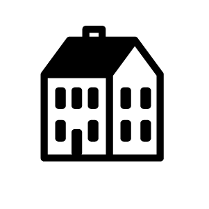

ONE-STOP FOR RISD TIPS, TRICKS AND HACKS BY THE STUDENTS, FOR THE STUDENTS.
- 
- Living
- Making

- Academics
- Leisure
- (cute) MANIFESTO
ONE-STOP FOR RISD TIPS, TRICKS AND HACKS BY THE STUDENTS, FOR THE STUDENTS.
Good grill, but they don’t prepare eggs. Make sure you get your main dish with two sides and
a drink to max out the value of your Meal!
You can find the daily menu
here!
LOCATION
15 Westminster St.
Across from the library doors
TIPS
- Has fruit, prepared meals, pastries
- You can ask for produce at the grill!
All you can eat buffet; take some fruit with you before you leave!
You can find the daily menu
here
LOCATION
55 Angell St.
In the freshman quad
TIPS
- lmao
- wau
Good desserts, burritos, bowls, and smoothies! You can find their daily menu here!
Great sandwiches and fresh peanut butter! Arguably the best place to spend a meal swipe.
A hipster coffee spot and a great place to work outside of studio!
LOCATION
122 Fountain St.
Behind Carr Haus!
TIPS
- Outlets under the benches
- Avocado toast is bomb
A great, affordable on-campus cafe and a nice place to work!
LOCATION
210 Benefit St.
Looks like Snow White's house
TIPS
- Best on-campus coffee
- Every Saturday after 5PM you can come get free leftover food!
- You can add lavender (syrup) to any drink!
- If you bring your own mug, it's 50% off your drink!
Other good things to know
-
Foundation Plan:
- Unlimited meal swipes to The Met, RISD’s “All-You-Care-To-Eat” facility
- One meal swipe per day at Portfolio Café, Watermark Café or Jolly Roger Deli
- $500 in meal points per year
- Three guest meals per semester
- Two free exchangeable to-go (OZZI) containers per semester
- Free birthday cake
Residential Plan:
- Two meal swipes per day
- $1500 dining points per year
- Three guest meals per semester
- Two free exchangeable to-go (OZZI) containers per semester
- Free birthday cake
Flex 7-60 Plan:
- 90 meal swipes per semester
- $1,400 dining points per year
- Three guest meals per semester
- Two free exchangeable to-go (OZZI) containers per semester
- Free birthday cake
Connect 3-25 Plan:
- 50 meal swipes per semester
- $850 dining points per year
- Three guest meals per semester
- Two free exchangeable to-go (OZZI) containers per semester
Read more about meal plan options here!
TIPS
- If you see yourself cooking alot opt for a lower meal plan.
- Always check what your housing plan is, it might prevent you from choosing the meal plan you want.
- You can use your meal points at the vending machines.
- Don't forget to get your free birthday cake on your birthday!
- If you run out of meal swipes or points at the end of the semester someone on the RISD meal share Facebook group might be able to help you out! Same goes if you have a lot of extra meal swipes or points at the end of the semester. Help your classmates out!
Food places to try on Thayer: Bajas, East Side Pockets, Korean Chicken, Kabob and Curry.
View Thayer Street on Google maps!
Cool places to checkout: Duck n Bunny, Coffee Exchange, Eye Brow Threading, Nostalgia Antiques, Rockstar (Ear piercing), Floral Shop.
View Wickenden Street on Google maps!
Lots of good Italian and Middle Eastern Food Places. Check out Pastiche, a classic Providence bakery.
View Atwells Street on Google maps!
The mall has a terrible escalator layout, but overall has the necessary shops.
Here’s the directory
View The Providence Mall on Google maps!
Ken's Ramen and Ellie's bakery are both great places to eat!
View Downtown Providence on Google maps!
There are vending machines located in most buildings on campus. Here are
some good ones to know about!
LOCATIONS
Prov Wash basement
Design Center 1st floor
15 West 4th, 6th and 9th floors
Industrial Design 4th floor
TIPS
You can swipe your ID and use meal points
If you give them cash and press "return" you'll (most likely)
get back quarters that you can use for laundry!
Here are a few places where you can get your fresh produce!
Here are several off-campus grocery stores!
Places to get ethnic goods that are difficult to find in regular stores:
Most convenient place to live because you don’t have to leave the building to eat at a dining hall. Most sophomores live here.
TIPS
- Some rooms have shared kitchen, bathroom and living room with separate bedrooms while others have shared bedrooms or open studio plans.
- Choose who you want to live with carefully! Many Freshman just choose to live with their closest friends for their Sophomore year. Although living with your friends can be fun, it can also cause problems if you do not have similar expectations for cleanliness, noise and privacy.
Less busy and more homey than 15 West.
TIPS
- Some rooms have shared kitchen, bathroom and living room with separate bedrooms while others have shared bedrooms or open studio plans.
- Choose who you want to live with carefully! Many Freshman just choose to live with their closest friends for their Sophomore year. Although living with your friends can be fun, it can also cause problems if you do not have similar expectations for cleanliness, noise and privacy.
Almost all Freshman start of living on the Quad. It is more social than upperclassmen housing and there are work rooms where you can do your homework. The Met (the main dining hall) is also in the center of the Quad. Some Freshman can choose to live in Hill houses outside of the Quad. These hill houses are more homey, but less of a typical dorm experience.
Nice apartment style living, recently remodeled rooms, far from campus.
TIPS
- Some rooms have shared kitchen, bathroom and living room with separate bedrooms while others have shared bedrooms or open studio plans.
- Choose who you want to live with carefully! Many Freshman just choose to live with their closest friends for their Sophomore year. Although living with your friends can be fun, it can also cause problems if you do not have similar expectations for cleanliness, noise and privacy.
Living off campus is a good option for many RISD Junior and Seniors who are looking for affordable housing.
TIPS
- RISD has some resouces to help students with off campus living
- If you have trouble with your landlord, RISD will help connect you to a lawyer!
- Ask upper classmen for recommendation on landlords. You might be able to inherit a graduating seniors lease!
Edge College Hill is more expensive than on campus housing but very nice!
Click this link to view all the places you can do your laundry on campus and whether each machine is in use or free.
RISD also offers a laundry service. Learn more about the laundry service here.
TIPS
- If you live off campus and don't have your own laundry machine, you can get someone to swipe you into one of the off campus laundry rooms
- You can use RISD bucks to do your laundry
- There are lost and found tabels in almost all of the laundry rooms incase you loose something in the wash.
TIPS
- If you need quarters for a laundry machine, you can put dollar bills into the vending machines and then push the "return money" button and it will give you back your money in quarters. Be careful though! Sometimes they give you back dimes if they are out of quarters.
- Don't eat tide pods
Here is a list of some places that you can work on campus! Reach out to the managers and coordinators of these facilities before the semester starts to ask if they are hiring students.
TIPS
Your professors might give you a long list of “required” supplies in the beginning of the semester. Don’t actually buy all of the supplies until you really need it because often times, you will not actually need all of the supplies on the supply lists.
Amazon has basically everything you could ever need!
TIPS
Sign up for one free year of Amazon prime with your RISD student email.
The RISD store has a lot of the basic supplies for your foundations classes as well as staples like sketchbooks and pencils.
Here it is on google maps
TIPS
You can get a discount if you show your student ID, but even with the discount the RISD store can still be a little pricey.
The RISD 3D store is separate from the main RISD store. It sells “3D” products such as wood, dowels and rope.
Check it out on google maps
TIPS
If you need something cut (like wood or plastic) you can ask the friendly people who work at the 3D store to cut it for you.
Blick is located on Wickenden street and has similar supplies to the RISD store. Blick’s prices are slightly cheaper. Check it out on google maps
Paperworks has a wide array of paper selections. The owner is very friendly and will help you find what you need.
Check it out on google maps
TIPS
- If you can't find what you need in the store, they can order the paper that you need and have it in the store by the next day.
- If you don't want to buy a whole pack of paper, sometimes you can buy individual sheets if you ask.
2nd Life is a great place to get used and leftover materials for cheap. You can also donate left over materails from your projects that you do not intend to use and get 2nd life store credit in exchange. One man's trash is another mans treasure!
Check it out on google maps
TIPS
- You can only use RISD bucks. You cannot use a credit card or cash to purchase items.
- You can buy things with store credit.
Free and For Sale is kind of like e-bay but just for RISD students. You can buy and sell old clothes, books, bus tickets, art supplies and almost anything else!
TIPS
Don't be a dick and make sure that you actually follow through if you say you will buy something from someone or sell something to someone.
TIPS
Ask the upperclassmen in your department where they put leftover or scraps of supplies in your studios.
Here are all of the locations that you can laser cut at on campus and here is information about what you can and cannot laser cut.
The Brown Design Workshop also has resources that you should check out!
TIPS
Some of these locations you might need to schedule a time to laser cut ahead of time. Go to the location and ask a shop tech for more information about signing up for a time slot and setting up a file for laser cutting.
Here are all of the locations that you can use a CNC on campus.
TIPS
Some of these locations you might need to schedule a time slot to use the machine ahead of time. Go to the location and ask a shop tech for more information about signing up for a time slot and setting up a file for CNCing.
Check out the 3rd Floor of the Design Center as well as Brown's dark room
TIPS
You probably need to take a class or get special permission to use these facilities.
The 5TH Floor design center, 3rd Floor ID building and Provwash have lighting rooms for photo shoots.
TIPS
Make sure you email the respective department heads for key access to these rooms and sign up for a time slot ahead of time.
Here is a list of all the woodshops on campus
The Brown Design Workshop also has resources that you should check out!
TIPS
Beware that you need to be trained to use most of the equipment in these shops!
Here is a list of all the metal shops on campus
TIPS
Beware that you need to be trained to use most of the equipment in these shops!
Metcalf basement has ceramics facilites
TIPS
There are evening classes for Freshman where you can learn to throw.
Here is a list of all the computer labs on campus
TIPS
These labs also have printers and many have scanners as well.
Here is a list of all the places you can print on campus
If you want someone to print, cut and bind for you, you can check out the Brown Print Shop or Allegra Print Shop.
TIPS
- Most of the computer labs on campus have printers in them.
- The library printers have nicer paper than all the other printers.
- In order to print you need to download the RISD print drives for the printers that you would like to use.
- The process of printing and setting up documents for printing can be a little confusing at first, so we recomend that you ask a computer lab, shop monitor or upper classman for help the first time.
Here is everything you need to know about 3D printing on campus
The Brown Design Workshop also has resources that you should check out!
Check out this page on locations for Sewing and Digital Embroidery
You can try VR at RISD coworks as well as Brown's Yurt
You can use spray booths at these locations
TIPS
Don't be an asshole and use the spray booths so that you don't hurt other people's lungs!
There are light boxes on the 7th floor of the Design Center, College building and Illustration building.
Here is all the information you need about enrolling a Brown class and here is the brown cource catalog
1. Email the Brown professor before the start of the semester to express your interest in the class
2. Print out the form on the website linked above
3. Get all of the signatures that the form asks for in the order that they are listed on the form.
4. You cannot register for a Brown class until the first day of RISD classes
TIPS
- Don’t be intimidated by the “ivy school” students! RISD students are wayyy harder working than Brown students and you will do just fine in any Brown class you choose to take.
- Make sure you get the signatures on the form in the correct order! For example, the RISD registrar’s will not sign your form until after you have already gotten the Brown registrar’s signature.
RISD has great studio classes as well as great liberal arts arts classes!
TIPS
- Make sure you know how many of each type of liberal arts classes you are required to take.
- Try to take all of your required liberal arts classes when you are a Freshman and Junior so that you have time to take the cool classes that you want when you are a Senior.
- You can also check out Rate my professor for student reports on professors.
In addition to your studio major, you can declare an optional liberal arts "concentration" (basically the same thing as a minor).
The concentrations are:
Nature-Culture-Sustainability Studies(NCSS)
Computation, Technology and Cultuer(CTC)
Drawing
History of Art + Visual Cultuer (HAVC)
History, Philosophy + the Social Sciences (HPSS)
Literary Arts + Studies (LAS)
TIPS
- You have to email the conentration cordinators to get enrolled! You cannot just declare a concentration online like your major
- Concentrations are optional but recommended! They are only 12-15 credits and you need to take liberal arts classes anyways.